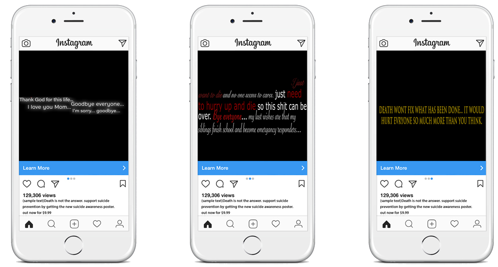

Suicide and depression are very horrible problems. Someone threatening to take their own life is not something to be taken lightly, we made this poster to show what people think when they are suicidal, a few of these are not appropriate but do show just how badly these things affect people, below are multiple websites that can help those in need.
